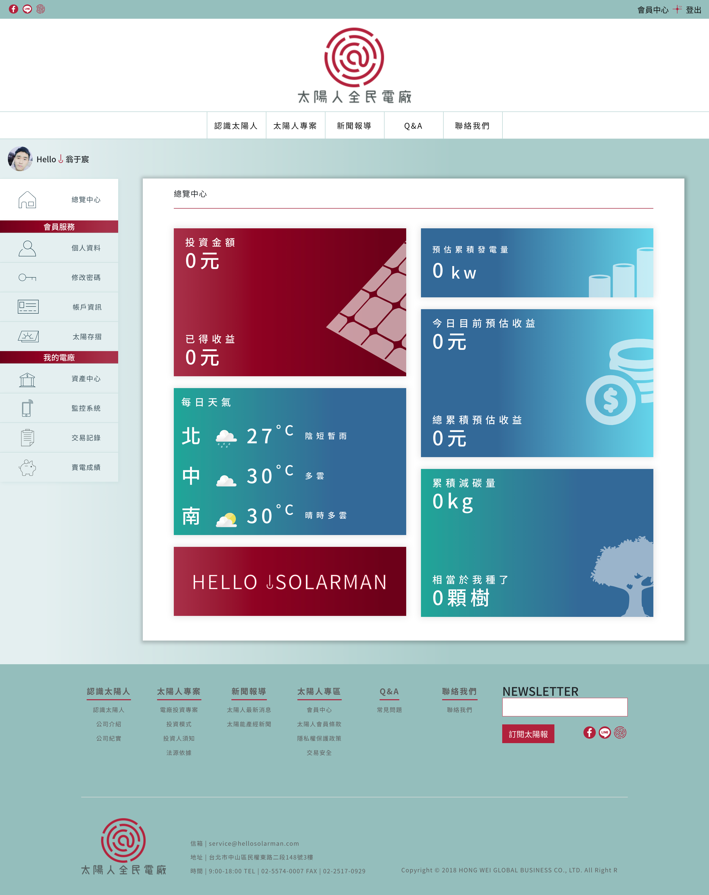
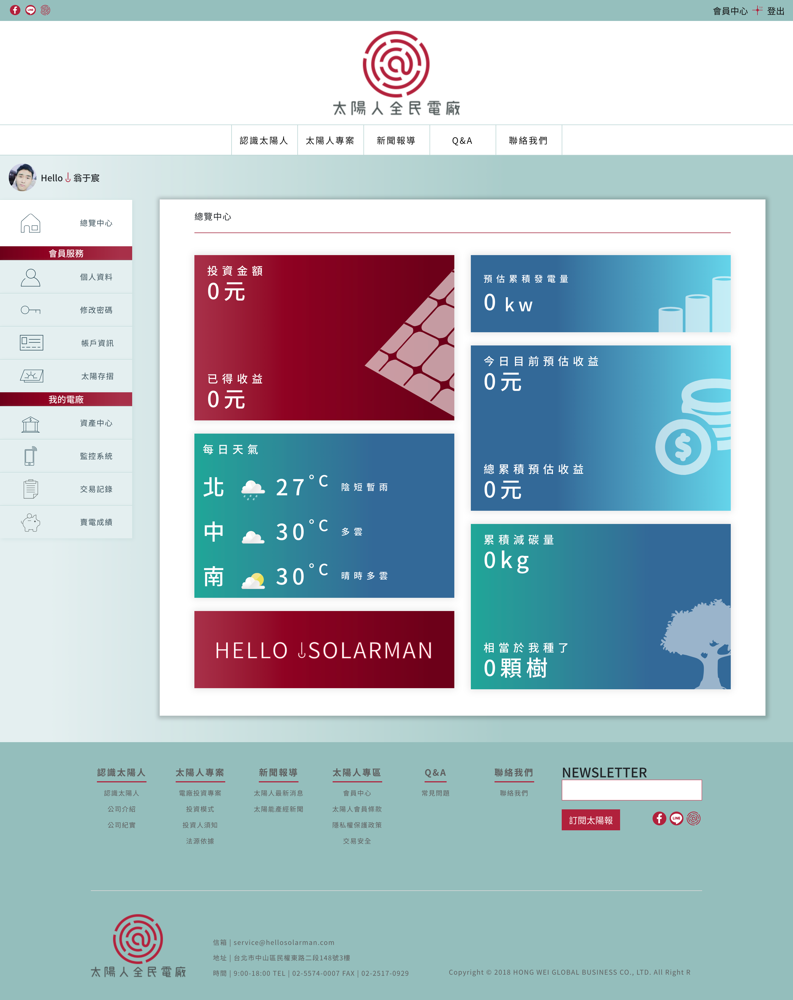

2018-12 to 至今
4IDPS 我愛數位科技
獨立負責 MES 系統開發
包含系統規劃、設計、執行技術部份使用 NodeJS + Oracle 搭配前端 React+Redux
負責Nextmile 網站前後端開發
技術包含：AWS Serverless(Amplify,Dynamodb,Appsync,S3
Bucket),React + Graphql
負責LevelHeroes 網站前端開發
技術包含： React, CSS in JS (Styled Components), hook, Storybook
內部訓練經驗分享
包含像是CSS、React、Javascript等技術分享，以及專案經驗分享
 
